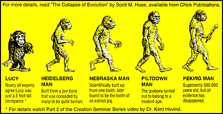
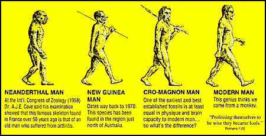
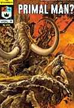

Fossil Hominids: Big Daddy?
Big Daddy? is a small anti-evolution comic book tract by evangelist Jack Chick. Since there was already an excellent review of it on the web, I have included it here with permission of the author:
Big Daddy?, reviewed by Cosma ShaliziThe booklet briefly skims over a number of common creationist arguments, but, as one might expect from the title and cover illustration, human evolution comes in for special attention. The centerfold lists a supposed parade of human ancestors:Jack Chick writes Christian comic books. "So what?", you say. Dear Reader, you are obviously not familiar with what lurks in the lowest reaches of the American religion. I first encountered Chick's work as an undergraduate at Berkeley --- someone had been passing them out on the main campus square, and one of them found its way to the physics society. This classic was entitled Big Daddy? and the cover was graced by a grinning chimpanzee eating a banana. It told the story of the conflict between a born-again Christian high school student (who looked like a Hitler Youth recruiting poster) and his science teacher (who looked, not to put too fine a point on it, remarkably "Jewish"). The science teacher attempted to indoctrinate his class with the vile doctrines of secular humanism, an old earth and evolution: but the stalwart young man stood firm, secure in his God and his faith, and finally confuted him with the nucleus of the atom. Here, he said, were all these protons, of like charge, bound together: but don't like charges repel? What holds them together? The teacher is bereft, sweating, without answer. The youth triumphantly says, "Our Lord, Jesus Christ," and cites an epistle to the Colossians. The class is converted; I forget what happens to the teacher [he got the sack -JF]. Most of us were taking nuclear physics at the time...
[Some explanation may be necessary here. The forces holding atoms together are not familiar from everyday experience, but they are very well understood by nuclear physicists, thanks to decades of scientific experiments. Saying that "Jesus holds atoms together" is as hilariously ignorant as claiming that planets travel in ellipses because angels are pushing them around. -JF]
Mr. Chick has been turning out this stuff since the '60s, and beneath the intense ignorance, anti-Catholicism, creationism, blood and gore, homophobia, sadistic fantasies about Hell, paranoid fantasies about Satanism, drugs and the apocalypse, and vicious resentment of others' prosperity (the only thing missing is explicit anti-semitism) --- or perhaps, because of all that --- there's a great deal of unintentional humor. It's an acquired taste, I admit.


This is a typical rehashing of the usual creationist chestnuts. It ignores almost all the the real evidence, misrepresents the real fossils that are discussed (Heidelberg Man, Peking Man, Neandertal Man), of course mentions Nebraska Man and Piltdown Man, and finally lists some fossils that have never been claimed to be anything but Homo sapiens (New Guinea Man, Cro-Magnon Man)
The real oddity in Chick's list is "New Guinea Man". As far as I know, no one has ever proposed this as any sort of transitional form. It presumably refers to fragments of a fossil modern human skull thought to be about 5000 years old found at Aitape (now Eitape) about 60 years ago. This is the only human fossil ever found in New Guinea, and is very obscure; I have never seen it even mentioned in any mainstream scientific or popular literature on human origins. The only place (other than Big Daddy) I have ever seen it referred to is a 1961 book by Canadian creationist Evan Shute, Flaws in the Theory of Evolution. Shute merely mentions the existence of this fossil in a list of many other fossils and does not discuss it individually, so Chick may have found out about this fossil from another unknown source.
This little list has been widely copied. If you see a reference to New Guinea Man, or read that Heidelberg Man was "built from a jaw bone that was conceded by many to be quite human" or that Peking Man is "supposedly 500,000 years old, but all evidence has disappeared", you'll know it was cribbed from this little booklet.
The 2nd edition of Big Daddy? has only minor differences from the 1st edition. A few of the hoarier old creationist chestnuts have been abandoned, to be be replaced by some almost equally bad arguments. As far as the human evolution section goes, the only significant change is the addition of Lucy to the lineup:
"... most experts now agree that Lucy was only an unusual chimpanzee not a missing link."and
"Nearly all experts agree Lucy was just a 3 foot tall chimpanzee."For details on both of these statements, the reader is referred to videos from "Dr." Kent Hovind (who, according to his website, rewrote Big Daddy?). Hovind is presumably referring to claims by some scientists (e.g. Zilhman et. al. 1978) that bonobos (often called pygmy chimpanzees) are the best living prototype for the common ancestor of humans, chimps and gorillas.
These statements about Lucy are completely fictitious. I am not aware of a single reputable scientist, let alone most, who would claim that Lucy was "only an unusual chimpanzee". Even Zihlman, who is probably the most vocal defender of the resemblances between Lucy and pygmy chimps, has never said that Lucy is a chimp, and points out differences between them, the most obvious being that Lucy has a bipedal pelvis rather than a quadrupedal one (Zihlman 1984).

If you enjoyed Big Daddy?, you'll also get a kick out of Primal Man, one of a series of comic books published by Jack Chick. As you'd expect (if you're at all familiar with Chick's work), the evolutionists are unattractive, money-grubbing sleazebags with no redeeming qualities, while the Christian heroes are so handsome and pure you'll feel like gagging. Also as you'd expect, the creationist arguments and "science" are so hopelessly outdated and incompetent that even many creationists would be embarrassed by them. Ya gotta laugh!And for dessert, there's Chick's Evolution Poster, a send-up of the classic "March of Progress" illustration, and showing most of the lineup that appeared in Big Daddy?. The poster doesn't seem to be sold online any more, but this posting by P.Z. Myers will show you what it looked like and tear apart its arguments.
See also: a hilarious parody of Big Daddy?
References
Chick, J. 1972. Big Daddy? Chino, CA: Chick Publications.http://www.chick.com/reading/tracts/0055/0055_01.asp Chick, J. 1992. Big Daddy? Chino, CA: Chick Publications. (a rewrite by Kent Hovind)
Fenner, F.J. 1941. Fossil human skull fragments of probable Pleistocene age from Aitape, New Guinea. Records S.Australian Mus., 6:335-356.
Shute, E. 1961. Flaws in the theory of evolution. Nutley, NJ: Craig Press.
Zihlman A.L., Cronin J.E., Cramer D.L., and Sarich V.M. (1978): Pygmy chimpanzee as a possible prototype for the common ancestor of humans, chimpanzees and gorillas. Nature, 275:744-5.
Zihlman A.L. (1984): Pygmy chimps, people, and the pundits. New Scientist, (15 November 1984)39-40.
This page is part of the Fossil Hominids FAQ at the talk.origins Archive.
Home Page |
Species |
Fossils |
Creationism |
Reading |
References
Illustrations |
What's New |
Feedback |
Search |
Links |
Fiction
http://www.talkorigins.org/faqs/homs/bigdaddy.html, 08/31/2001
Copyright © Jim Foley
|| Email me